673건의 상가 매물 데이터를 다각도로 분석하여 도출한 프리미엄 비즈니스 인사이트
전체 매물의 대다수는 소규모 자본으로 접근 가능한 진입 장벽이 낮은 상권에 위치해 있으나, 강남, 역삼 등 초핵심 상권에 위치한 극소수의 프라임 등급 매물들이 가격의 평균을 기형적으로 끌어올리는 극단적인 멱법칙 분포를 보입니다.
권리금이 0으로 책정된 '무권리' 매물이 데이터의 절반 이상을 차지합니다. 초기 자본이 부족한 창업자에게는 기회일 수 있으나, 확실한 영업권이 보장된 A급 매물을 인수하여 캐시카우로 활용하는 전략도 유효합니다.
'기타업종', '일반음식점', '서비스업' 매물이 압도적인 비중을 차지합니다. 강남, 역삼, 신논현역 인근에 쏠려 있으며, 2030 직장인 타겟의 프리미엄화 또는 압도적인 가성비 전략이 필수적입니다.
조회수가 높다고 관심 등록이 선형적으로 늘어나지 않습니다. 소비자들은 단순히 싼 매물보다 권리금이 합리적이고 인테리어가 완비된 '가성비+시간절약' 매물에 실질적인 찜(Favorite)을 누릅니다.
초역세권 메인 상가와 이면도로 상가의 가격 차이는 권역 프리미엄이 작용합니다. 기계적인 평균(Mean)에 의존하기보다, 유사 조건 매물들의 중앙값(Median)이나 군집 분석을 통해 프라이싱 기준점을 도출해야 합니다.
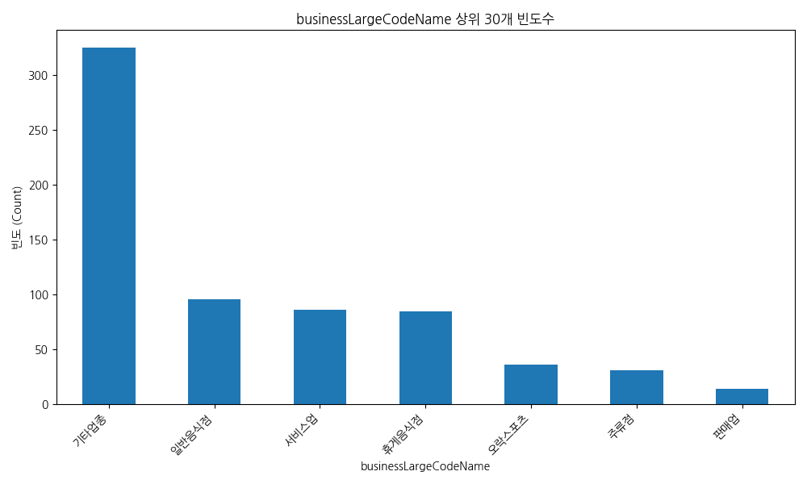
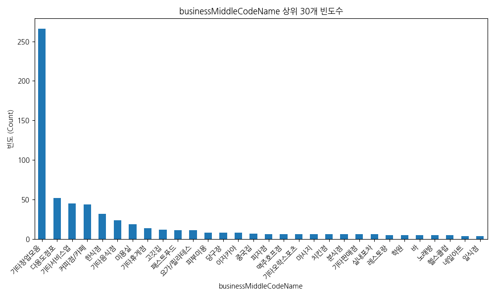
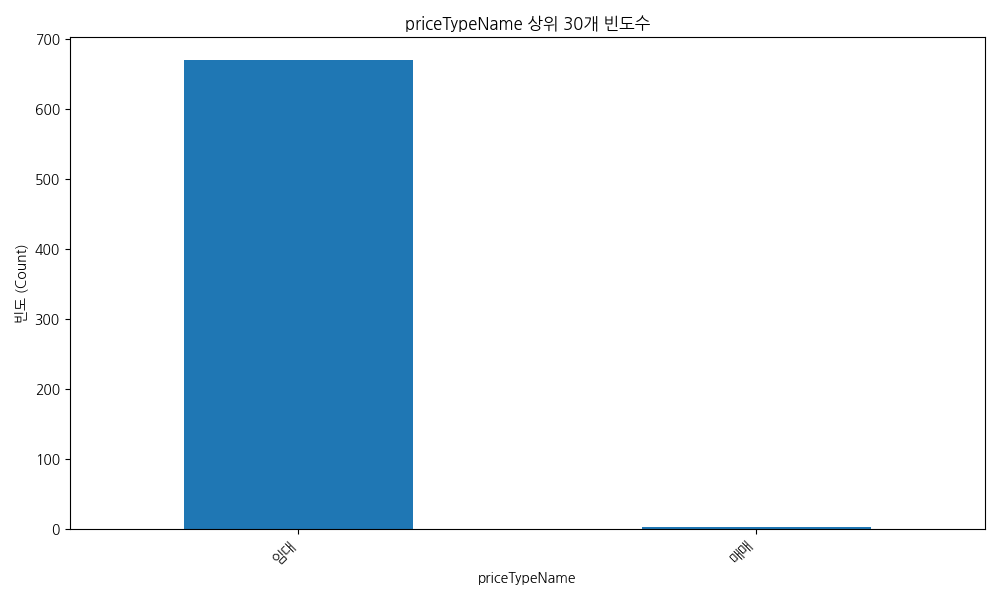
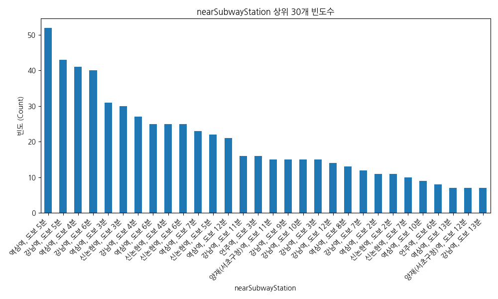
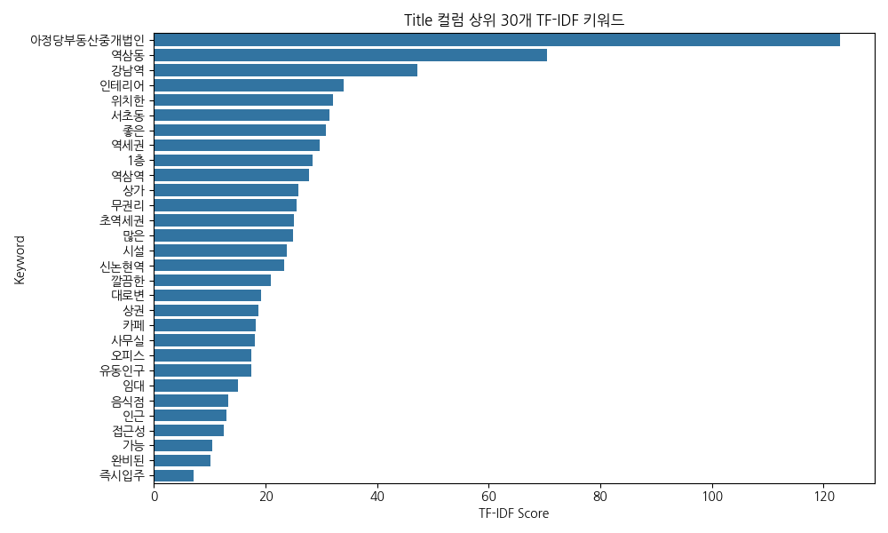
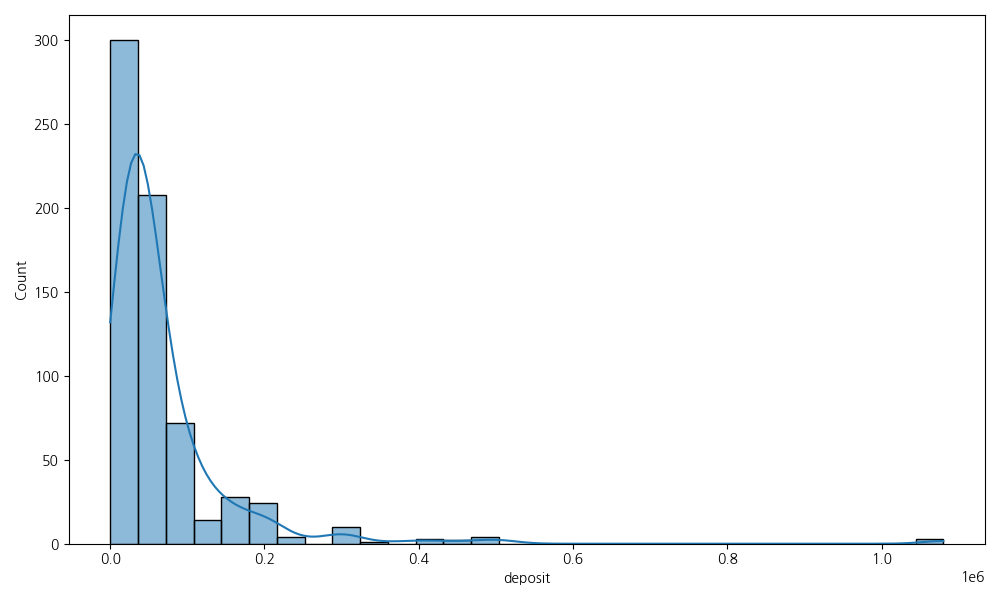
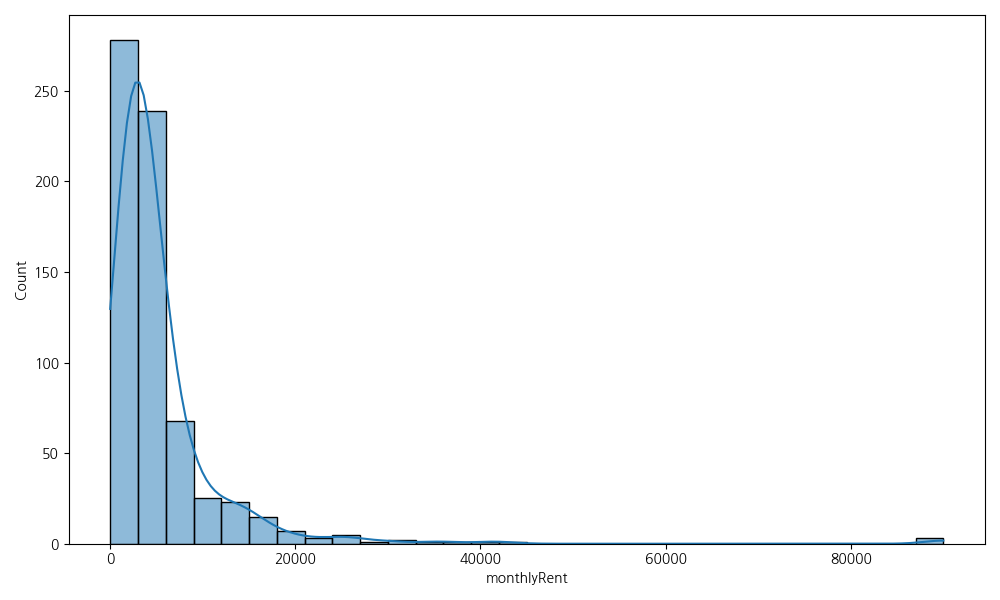
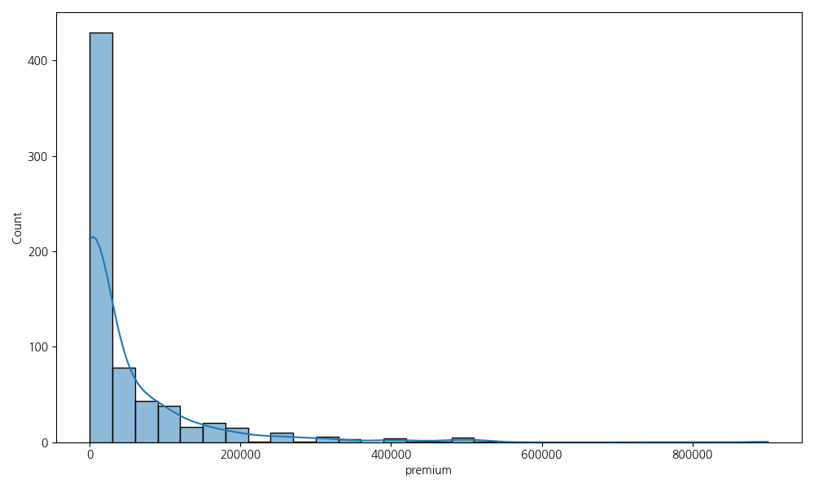
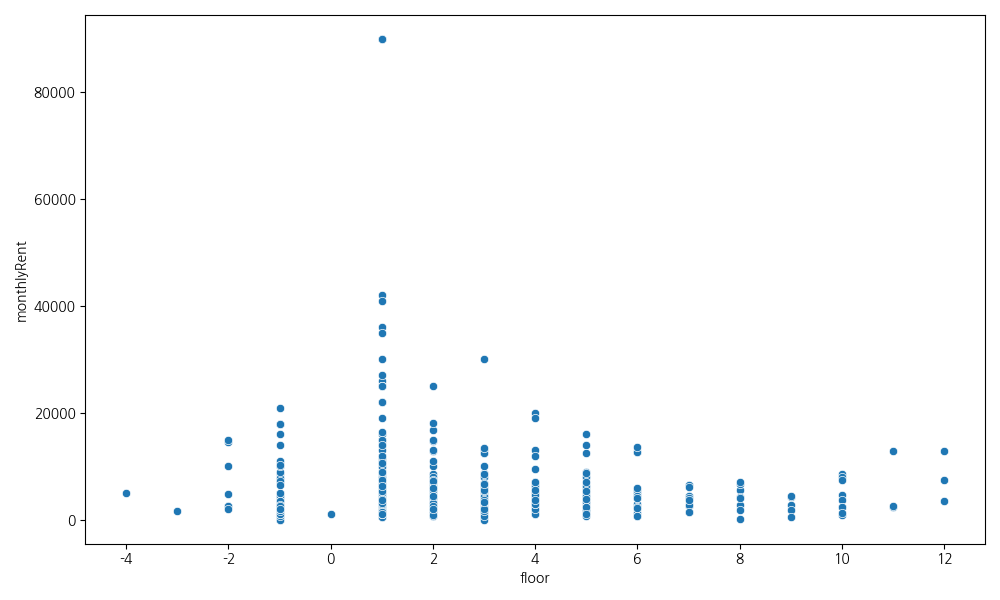
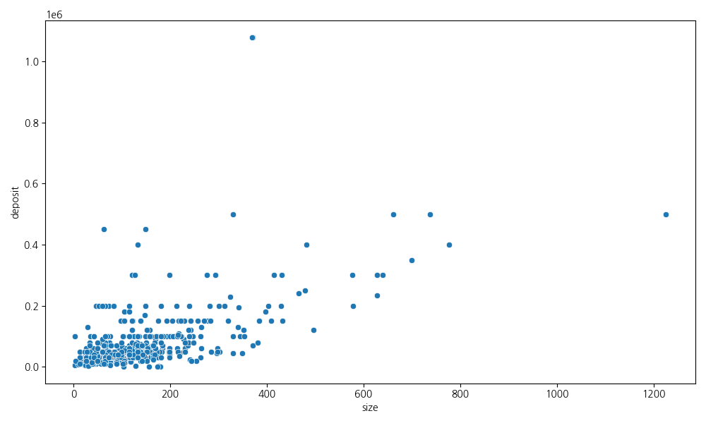
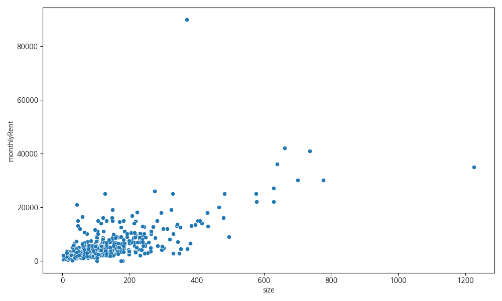
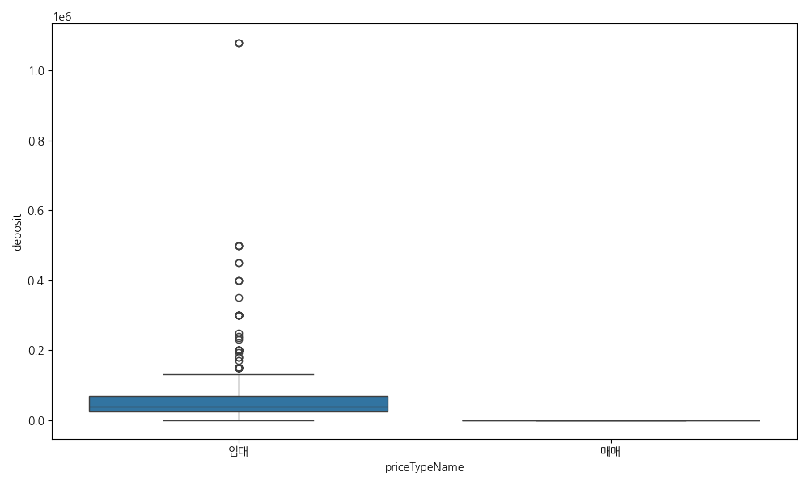
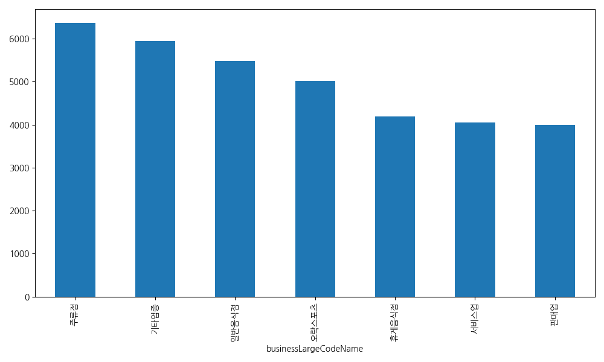
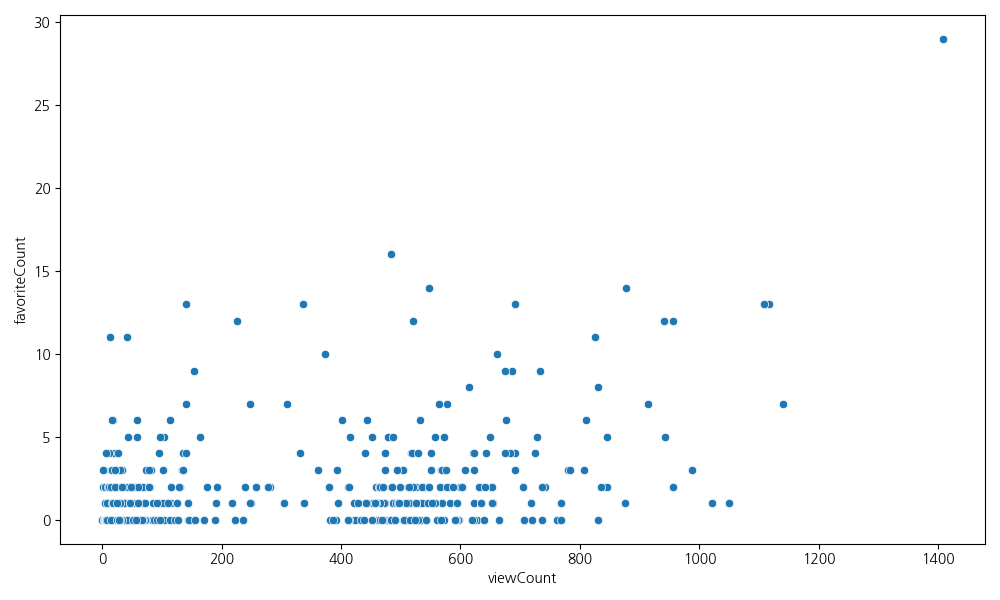
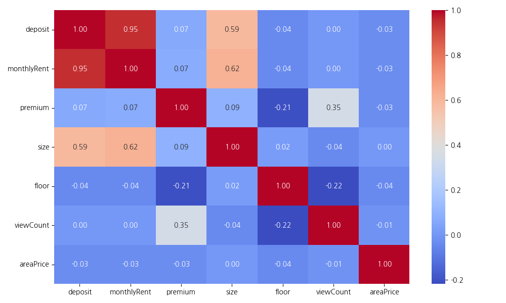